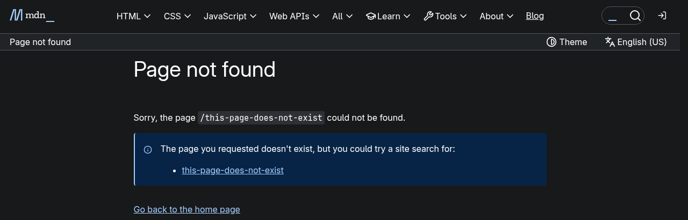

How HTTP Works
What actually happens between your browser and a website.
What Is HTTP?
HTTP stands for HyperText Transfer Protocol. Breaking the name down:
- HyperText – text that contains links to other documents
- Transfer – moving those documents between computers
- Protocol – the agreed rules for doing it
HTTP is an application-layer protocol. It defines what the messages mean and leaves the job of physically delivering them to the network underneath. Every time you load a page, click a link or submit a form, your browser is sending HTTP messages for you. One nice thing about HTTP is that the messages are plain, readable text, so developers can look at them directly when something breaks.
The Internet vs. the World Wide Web
People use these words like they mean the same thing, but they don't. A good way to think about it is that the Internet is the road network and the Web is one kind of traffic on it.
- The Internet is the global network of physical connections (cables, fiber, Wi-Fi, mobile) that moves data between computers. It also carries email, video calls, games and file transfers, and it existed for years before the Web.
- The World Wide Web is a system of linked documents that runs on top of the Internet. Tim Berners-Lee invented it at CERN in 1989.
The Web depends on three inventions that still work together every time you open a page:
- HTML – the format pages are written in
- URL – the address system, so every page and file has a unique address
- HTTP – the rules for moving those pages from a server to your browser
Clients and Servers
HTTP splits the Web into two roles. The client (also called the user agent) is the program acting for the user. Most of the time that is a web browser, but it can also be a mobile app or a search engine crawler. The server is the machine that stores or generates the resources and hands them out when asked.
Two rules come straight from this split:
- The server cannot start the conversation. The client always sends the request first. A website can't push a page onto your screen out of nowhere.
- One page means many requests. A web page is not one file. The browser gets the HTML first, then sends new requests for every image, stylesheet and script that the HTML mentions.
Requests often pass through proxies along the way. A proxy might cache a copy of a popular file, filter content, or spread traffic across several servers. Usually neither the browser nor the server notices it is there.
The Request-Response Cycle
Everything HTTP does comes down to this four-step loop:
- Open a connection. The client connects to the server. HTTP/1.1 and HTTP/2 use TCP, and HTTP/3 uses QUIC.
- Send a request. The client sends a message with a method, the path it wants, the HTTP version and some headers.
- Read the response. The server replies with a status code, its own headers, and usually a body with the content.
- Close or reuse the connection. Since HTTP/1.1, the connection can stay open for the next request.
What Happens When You Enter a URL
Say you type https://example.com/index.html and press Enter. This all happens in well under a second:
- The browser splits the URL into a scheme (
https), a host name (example.com) and a path (/index.html). - Computers route by IP address, not by name, so the browser asks DNS (the Domain Name System) to translate
example.cominto an IP address. - The browser connects to that address on port 443 (the HTTPS port) and does a TLS handshake so the traffic is encrypted.
- The browser sends the HTTP request:
GET /index.html HTTP/1.1plus headers. - The server sends back a status line like
HTTP/1.1 200 OK, headers, and the HTML of the page. - The browser reads the HTML and sends more requests for each stylesheet, script, font and image, then draws the page.
Only steps 4 and 5 are actually HTTP. The other steps are the supporting pieces HTTP depends on.
HTTP Requests
Here is what a simple GET request looks like. All of it is ordinary text sent over the network:
GET /index.html HTTP/1.1
Host: example.com
User-Agent: Mozilla/5.0 (Windows NT 10.0)
Accept: text/html
Accept-Language: en-US- First line: the method (
GET), the path of the resource (/index.html) and the HTTP version. - Headers: name-and-value lines saying which site is wanted, what software is asking, and which formats it accepts.
- Body: a GET request has no body because it is only asking for something. Requests that send data, like POST, add a blank line and then the data.
The Host header matters more than it looks. One server usually hosts
many websites on the same IP address, and Host tells it which one you
want. HTTP/1.1 made it required.
HTTP Responses
The server's answer has the same general shape, but starts with a status line:
HTTP/1.1 200 OK
Date: Tue, 02 Sep 2025 14:28:02 GMT
Server: Apache
Content-Type: text/html; charset=UTF-8
Content-Length: 1256
<!DOCTYPE html> ... the page itself ...- Status line: the version, a three-digit status code and a short message.
200 OKmeans it worked. - Headers: information about the answer, like when it was made and what type of data the body holds.
- Blank line, then body: everything after the empty line is the actual content.
Content-Type is probably the most important response header. It tells the
browser what it is receiving. text/html means show it as a web page and
image/png means draw a picture.
HTTP Methods
The method is the first word of a request. It tells the server what kind of action the client wants.
| Method | What it does | Everyday example | Changes data? |
|---|---|---|---|
GET |
Retrieves a resource. This is the most common method. | Opening a news article or loading an image | No |
POST |
Sends data to the server so it can create or process something. | Submitting a sign-up form or posting a comment | Yes |
PUT |
Replaces an existing resource with the data sent. | Overwriting a saved document with a new version | Yes |
DELETE |
Removes the resource at the given address. | Deleting a photo from an online album | Yes |
HEAD |
Asks for only the headers, without the body. | Checking if a large file changed before downloading it | No |
GET and HEAD only read data, which is why a browser can safely load them again. POST, PUT and DELETE change things on the server. That is why refreshing a page right after submitting a form gives you a warning.
HTTP Status Codes
Every response has a three-digit code. The first digit tells you which category it falls into:
- 1xx Informational – the request was received and is still being processed. Rare in normal browsing.
- 2xx Success – it worked. Example:
200 OK. - 3xx Redirection – the resource is somewhere else. Example:
301 Moved Permanently. - 4xx Client error – the request was the problem. Example:
404 Not Found. - 5xx Server error – the request was fine, but the server failed. Example:
500 Internal Server Error.
Because the categories are fixed, a browser that gets a code it has never seen before still knows what kind of result it is from the first digit.

HTTP Headers
Headers are simple Name: value lines that carry everything except the
content itself. They are a big reason HTTP has lasted so long. When a new feature is
needed, it can usually be added as a new header instead of a whole new protocol.
Cookies, caching and many security protections were all added this way.
Common request headers (sent by the browser)
Host– which website is wanted on this serverUser-Agent– which browser and operating system is askingAccept– which content formats the browser can handleCookie– sends back data the site stored earlier, which is how you stay logged in
Common response headers (sent by the server)
Content-Type– what the body is (HTML, JSON, an image, etc.)Content-Length– how many bytes the body containsCache-Control– how long the browser can reuse this copySet-Cookie– asks the browser to store a value for laterLocation– used with a 3xx code to give the new address
You can see real headers yourself: press F12 in Chrome, Edge or Firefox, open the Network tab, reload a page, and click any request.